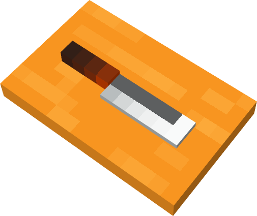

Day 7 — Week 2: Texturing & Polish
07Board and knife texture pass
Yesterday you proved that painted pixels can make a simple crate read better without adding cubes. Today you repeat that skill on the chopping board and knife: short wood grain, a clean blade highlight, and a few darker handle marks.
One polished chopping-board render: the same Day-2 model, still using the shared palette, but now the board reads more like wood and the knife reads more like steel. The new habit is choosing texture marks based on the material.
Warm up — 30-second recall
Answer first, then open the cards. This is how yesterday's painting skill becomes reusable.
What changed on the crate yesterday: geometry or texture?
Which brush setting keeps pixel detail crisp?
What is the rule if texture starts looking noisy?
The one new idea — each material gets its own marks
A good texture is not just "add lines everywhere." Wood, metal, and dark handles need different marks. For this prop, the board gets short broken grain, the blade gets one clean highlight band, and the handle gets a few dark end marks. Same tool, different decision.

Do it with me
Keep the Course Palette open. If the saved palette is not loaded, import it before painting.
-
Open the board and save a copy
Openchopping-board.bbmodel. Use File → Save As if you want a safe copy, e.g.chopping-board-texture.bbmodel. Do not rebuild the prop. -
Reset the base colors if needed
In Paint mode, use Paint Bucket → Fill Mode: Cube. Fill the board with Wood, the blade with Steel, and the handle with Dark Wood. This gives you a clean base before detail. -
⭐ Add short broken wood grain
Pick Dark Wood. Use the Paint Brush at size 1. Paint 6-10 short lines on the board, not full-width stripes. Leave gaps. Wood grain should feel irregular, but still calm. -
Add a lighter board edge
Optional: pick Cream and add two or three tiny pixels along the top edge of the board. This is a stylized catchlight, not a new color family. -
Make the knife blade read as steel
Pick Cream or a very light part of the Steel color. Paint one narrow highlight line along the blade. Keep it straighter and cleaner than the wood grain. Metal likes crisp highlights. -
Darken the handle ends
Pick Dark Wood. Add a few darker pixels at the handle's ends or underside. Stop early. The handle only needs enough detail to avoid looking like a plain bar. -
Thumbnail test
Zoom out until the board is small. You should still read "wood board with knife." If the grain turns into static, undo half of it. -
Save model and texture
Save the.bbmodeland the texture image if Blockbench asks. The editable model and the painted texture are both part of the asset. -
Render the after shot
Capture the board from a slightly high 3/4 angle. If you can place it beside the textured crate, even better: the post will show the pack becoming more cohesive. -
Post your Day-7 itch.io post
Use the caption below. Streak: Day 7.
Do not cover the board with equal stripes. Equal stripes make it look like a pattern. Short, uneven marks make it read as stylized wood.
itch.io post (English):
RedNote / 小红书 (中文):
Quick self-check
Say the answer first, then open the card.
Why are the wood marks broken instead of long equal stripes?
What kind of mark makes the blade read more like metal?
What should stay consistent from Lesson 5?
Next, use controlled texture detail on the cooking pot: a simple rim highlight, a darker lower edge, and maybe one warm handle accent. Same principle, new material.
If the grain looks too busy, the blade highlight paints the wrong face, or the texture save is confusing, tell me exactly what you see. Bring back your Day-7 board and I'll set up the cooking pot texture pass.